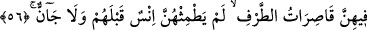

“İki cennetin de
meyvesinin
devşirilmesi
yakındır.”
“Cenâ”
kelimesi
“mecnâ/devşirilmiş” anlamında isimdir. Kabz kelimesinin “makbûz” mânâsında olduğu
gibi. Hz. Ali (k.v.) şöyle der: “Bu benim devşirdiğimdir, muhayyerliği içindedir.”
Her cinâyet işleyenin nedametten dolayı eli ağzındadır. “Dân” kelimesi, “yakınlık”
anlamındadır. Yâni, cennetin ağaçlarından devşirilen mevyeler o kadar yakındır ki,
onlara ayaktaki, oturan veya uzanıp yatmış olan kimse ulaşıp koparır.
İbn Abbâs (r.a.) demiştir ki; ağaç o kadar yaklaşır ki, Allah dostu dilerse ayakta,
dilerse oturarak ve isterse yanı üzerine yatarak meyveyi devşirebilir. Denilmiştir ki
yaslanmış oturan bir kimse meyve arzuladığında ağacın dalı eğilir, istediği meyve
ağzına gelir. “Rûhânî yolculukta uzak mesafe olmaz.”
Fakir (Bursevî) der ki, uzaklık cismin kesâfetinden dolayıdır. Cennette ise cismin
kesâfet ve katılığı söz konusu değildir. Cennette bulunanlar, latîf ve nûrânî ruhlar
şeklindeki cisimlerdir. Yine, dünyadaki tâat ve ibâdetler, mutî olanın arzusuna bağlıdır.
Bu sebeple tâatların semeresi de cennette onun arzusuna bağlıdır. Onları hiçbir zorluk
olmadan elde eder. Yeme zorluğu da asla yoktur. Elde etmenin kolaylığını anlatmak,
yemenin kolaylığını tasvir etmektir. Bazı kimselerin ifâde ettiği gibi bu meyveleri
almadan ağzına gelir.
55. Öyleyken Rabinizin hangi nimetlerini yalanlayabilirsiniz?
Bu kalıcı ve lezzetli nimetlerden hangisini yalanlayabilirsiniz?
56. Oralarda gözlerini yalnız eşlerine çevirmiş güzeller var ki, bunlardan önce
onlara ne insan ne de cin dokunmuştur.
“Oralarda gözlerini yalnız eşlerine çevirmiş güzeller vardır.” Yâni iki cennet
sözünün ifâde ettiği cennetlerde. Bildiğin gibi bu cennetler, insan ve cinlerin Allah’tan
korkanları içindir veya amelinin çokluğuna göre Allah’tan korkan herkese mahsustur.
Âyet-i kerîmenin mânâsı şöyledir; oralarda gözlerini yalnız eşlerine çevirmiş,
onlardan başkasına bakmayan kadınlar vardır ve her biri eşine: “Rabbimin izzetine
yemin ederim ki, cennette senden daha güzel bir şey görmüyorum. Beni sana, seni de
bana eş yapan Allah’a hamd olsun” derler. Gözlerini yalnız eşlerine çevirmiş olmaları
hayâ duygusundandır. “Kâsirâtü’t-tarf”in anlamı, cennetin câriyeleri ve nâzeninleridir.
Nazlanmak için gözlerini işveyle yere indirirler.